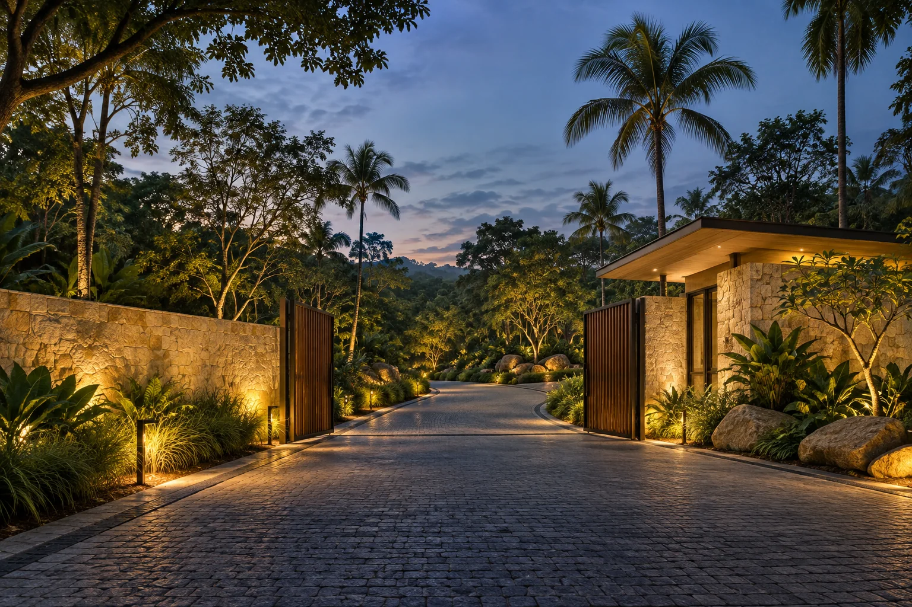
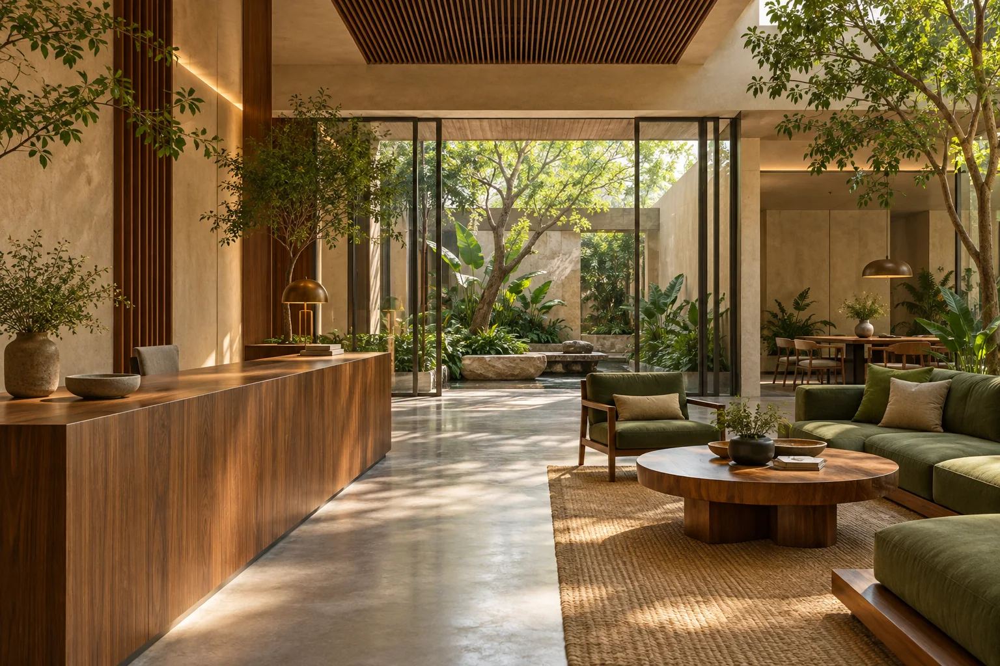

A quieter approach, with room to leave the day behind.

A quieter approach, with room to leave the day behind.

Generous rooms that open naturally to the outdoors.
Light in the windows. Time on the terrace.

Three ideas shape the house.
Rooms end softly, with planting and shade carrying the space outside.
Deep openings frame morning brightness and keep the interior calm later in the day.
Views are composed across gardens and terraces rather than directly into another room.

The garden. The terrace.
The paths that bring them together.
One landscape.
Many ways to spend a day.
A little space to wander.
Simple pleasures, given a little more room.
Material study
Stone, timber and shadow do most of the work.
A place to arrive.
A place to stay.
Maison Solenne is a residential concept by Lakshmikantha. Explore the thinking behind the identity, the experience and the path from browsing to a shortlist.